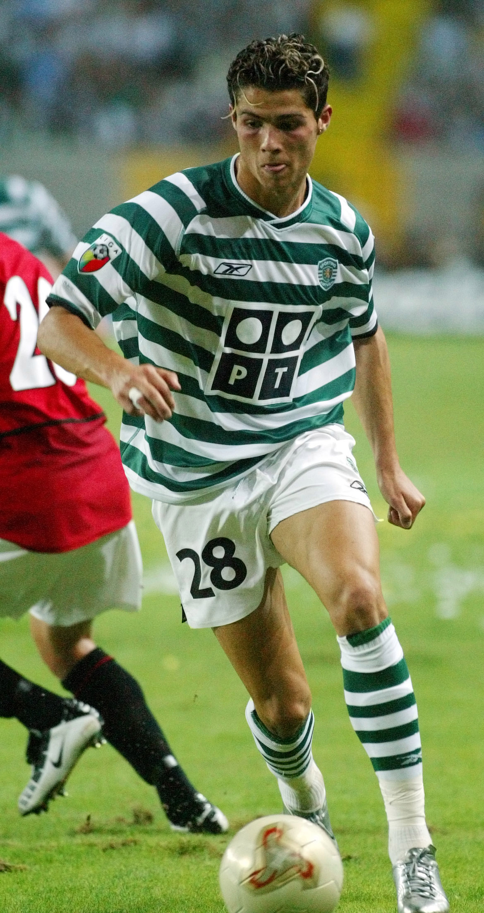

The year that changes CR7 life. As a 17 years old CR7 made his first ever professional match in Champions league with Sporting FC against Inter Milan in the second half as a sub on 14 August 2002.In his first ever match in the Portuguese Primeria Liga with sporting FC, Ronaldo scored two goals to help his team win against Moreirense.

2003-2009 at Manchester United
2003-2006
After good years in Sporting FC, and with an amazing start in the Primeria Liga with Sporting FC, Cristiano start to bring attention in himself from big clubs such as Manchester United in primer league.
August 2003, Manchester United played against Sporting FC, under Sir Alex Ferguson management, in this game Sporting FC won with 3-1. After this game Sir Alex agreed to sign Ronaldo for £12.24 million, at this time, the most ecpensive teenager in English football history. Ronaldo for Ferguson considered to be one of the most exciting young players he had ever seen, he said. Ronaldo want to wear the number 28 at united the same number he had with sporting fc, but the received the number 7 on his shirt, number 7 has been wearing by big united former stars such as David Beckham. The number 7 become more motivation for Cristiano.
On 16 august 2003, Ronaldo made his Manchester united debut vs Bolton Wanderes in the 4-0 win. He scored his first goal with Manchester united in November the first vs Portsmouth with a free kick.
2004-2005: First trophy
Ronaldo managed to help united to win the FA Cup Final against Millwall by scoring the first goal in the 3-0 win, he also won his first trophy that day.
Ronaldo making history at united by scoring theirs 1000th premier league goal, in their 4-1 losing match vs Middlesbrough.
The second trophy Ronaldo won with Manchester United was the Football league cup, in their 4-0 final win over Wigan Athletic, leaving his mark with the third goal.
2006-2007
After scoring over 20-goals for the first time, Cristiano Ronaldo won his first Premier league title. At the end of the December, Ronaldo scored three consecutive, after that he was named the Premier League Player of the Month in November and December. Becoming only the third player to receive consecutive honors.
2007-2008
In 2006-2007 UEFA Champions League, Ronaldo scored his first and second goal in the 7-1 win over Roma in the quarter-final stage, and after 30 games played in the competition. After a 7-1 win vs Roma, United did go throw to face Milan in the semi-final, there Ronaldo scored a goal in their 3-2 win in the first leg. But in the second leg Manchester United loses 3-0 and gets out of the competition against Milan. Ronaldo scored the only goal in game to give United a win in the derby against Manchester City, this goal makes Ronaldo riche his 50th goal for the club on May the 5th. In the end on the season United win their first league title in four years. As a result of his performances, he amassed a host of personal awards for the season. He won the Professional Footballers' Association's Player's Player, Fans' Player and Young Player of the Year awards, as well as the Football Writers' Association's Footballer of the Year award, becoming the first player to win all four main PFA and FWA honours. His wages were concurrently upgraded to £120,000 a week as part of a five-year contract extension. Ronaldo was named runner-up to Kaká for the 2007 Ballon d'Or, and came third, behind Kaká and Lionel Messi, in the running for the 2007 FIFA World Player of the Year award.
On 12 January 2008, Ronaldo scored his first and only hat-trick for United in a 6-0 win against Newcastle United, which therefore put them in the top of the league table. On 19 March, Ronaldo captained United for the first time in a home win over Bolton and scored both goals in a 2-0 win. After two goals against Bolton, Ronaldo set an new club’s new single-season record by a midfielder by 33 goals, which was held before by George Best with 32 goals in the 1967-68 season. After scoring 31 league goals, Ronaldo won the Premier League Golden Boot and the European Golden shoe, which made him the first winger to win the European Golden shoe. He additionally received the PFA Players' Player of the Year and FWA Footballer of the Year awards for the second consecutive season. In the knockout stage of the Champions League, Ronaldo scored the decisive goal against Lyon, which helped United advance to the quarter-finals 2–1 on aggregate, and, while playing as a striker, scored with a header in the 3–0 aggregate win over Roma. United reached the final against Chelsea in Moscow, where, despite his opening goal being negated by an equaliser and his penalty kick being saved in the shoot-out, United emerged victorious. As the Champions League top scorer, Ronaldo was named the UEFA Club Footballer of the Year. In the end of the 2007-2008 season, Ronaldo scored 42 goals in all competitions, with three matches missed. After his successful season, rumors said that Ronaldo interest in moving to Real Madrid, one of the best Footballs clubs in the world.
2008-2009: Final season at United
On 7 July, Ronaldo underwent ankle surgery ahead of the 2008-09 season. Which kept him out of playing for 10 weeks. In his return, he scored his 100th goal in all competitions for United with the first of two free kick in a 5-0 win against Stoke City on 15 November, which meant that he now scored against all 10 opposition teams in the Premier League at the time. At the close of 2008, Ronaldo helped United win the 2008 FIFA Club World Cup in Japan, assisting the final-winning goal against Liga de Quito and winning the Silver Ball in the process. With his 2008 Ballon d'Or and 2008 FIFA World Player of the Year, Ronaldo became United's first Ballon d'Or winner since Best in 1968, and the first Premier League player to be named the FIFA World Player of the Year.
His match-winning goal in the second leg against Porto, a 40-yard strike, earned him the inaugural FIFA Puskás Award, presented by FIFA in recognition of the best goal of the year, he later called it the best goal he had ever scored. United advanced to the final in Rome, where he made little impact in United's 2–0 defeat to Barcelona. Ronaldo ended his time in England with nine trophies, as United claimed their third successive league title and a Football League Cup. He finished the campaign with 26 goals in all competitions, 16 goals fewer than the previous season, in four more appearances. His final goal for United came on 10 May 2009 with a free kick in the Manchester derby at Old Trafford.
2009-2018 at Real Madrid
Ahead of the 2009–10 season, Ronaldo joined Real Madrid for a world record transfer fee at the time, of £80 million. His contract, which ran until 2015, was worth €11 million per year and contained a €1 billion buy-out clause. At least 80,000 fans attended his presentation at the Santiago Bernabéu, surpassing the 25-year record of 75,000 fans who had welcomed Diego Maradona at Napoli. Since club captain Raúl already wore the number 7 (the number Ronaldo wore at United), Ronaldo received the number 9 shirt.
2009-2013
On August 29th, Ronaldo made his La Liga debut for Real Madrid against Deportivo La Coruna and scored from the penalty spot in Madrid’s 3-2 home win. Then he became the first Madrid player to score in each of his first four league games. His first Champions League goals for the club followed with two free kicks in the first group match against Zürich. In October ended his strong start to the season because of an ankle injury while on international duty, which kept him away from the pitch for seven weeks. Ronaldo received his first red card in Spain against Almeria a week after his comeback from his ankle injury. In the end of the year in the middle of the season Ronaldo finished second in the 2009 Ballon d’Or and the 2009 FIFA World Player of the Year awards, behind Leo Messi who players for Barcelona, Real Madrid’s rivals. In the of the season Ronaldo ended up with 33 goals in all competitions, including a hat-trick in a 4-1 win against Mallorca, on 5 may 2010, his first hat-trick in the La Liga. His first season with Real Madrid ended trophyless.
Following Raul’s retirement Cristiano Ronaldo was given number 7 shirt for Madrid before the 2010-11 season. For the first time of his career Ronaldo scored four goals in a single match in their 6-1 win against Racing Santander on 23 October. In the end of the month, he ended up with 11 goals in six matches for club and country, the most he had scored in a single month. There after Ronaldo scored further hat/tricks against Athlectic Bilbao, Levante, Villarreal and Malaga. Despite his performances, he did not make it to the top three for the inaugural 2010 FIFA Ballon d’Or. During a historic series of four Clásicos against rivals Barcelona in April 2011, Ronaldo scored twice to equal his personal record of 42 goals in all competitions. Though he failed to score in either leg of the Champions League semi-finals as Madrid were eliminated, he equalised from the penalty spot in the return league game and scored the match-winning goal in the 103rd minute of the 2011 Copa del Rey Final, winning his first trophy in Spain. His two goals in the last match of the season against Almería made him the first player in La Liga to score 40 goals. In addition to the Pichichi Trophy, Ronaldo won the European Golden Shoe for a second time, becoming the first player to win the award in different leagues.
During the following season, Ronaldo achieved a new personal best of 60 goals in all competitions. He finished as runner-up to Messi for the 2011 FIFA Ballon d'Or, after scoring hat-tricks against Real Zaragoza, Rayo Vallecano, Málaga, Osasuna and Sevilla, the last of which put Madrid on top of the league by the season's midway point. Ronaldo found greater team success in the league, helping Madrid win their first league title in four years with a record 100 points. Following a hat-trick against Levante as Madrid further increased their lead over Barcelona, he scored his 100th league goal for Madrid in a 5–1 win over Real Sociedad on 24 March 2012, a milestone he reached in just 92 matches across three seasons, breaking the previous club record held by Ferenc Puskás. Another hat-trick in the Madrid derby against Atlético Madrid brought his total to 40 league goals, equalling his record of the previous season. His final league goal of the season, against Mallorca, took his total to 46 goals, four short of the new record set by Messi, though he became the first player to score against all 19 opposition teams in a single La Liga season.
Ronaldo began the 2012–13 season by lifting the 2012 Super copa de España, his third trophy in Spain. With a goal in each leg, he helped Madrid win the Spanish Super Cup on away goals following a 4–4 aggregate draw against Barcelona. Although Ronaldo publicly commented that he was unhappy with a "professional issue" within the club, prompted by his refusal to celebrate his 150th goal for Madrid, his goalscoring rate did not suffer. After netting a hat-trick, including two penalties, against Deportivo, he scored his first hat-trick in the Champions League in a 4–1 win over Ajax. Four days later, he became the first player to score in six successive Clásicos when he hit a brace in a 2–2 draw at Camp Nou. His performances again saw Ronaldo voted second in the running for the 2012 FIFA Ballon d'Or, behind four-time winner Messi.
2013–2015: Consecutive FIFA Ballon d'Or wins and La Décima
Following the 2012–13 winter break, Ronaldo captained Madrid for the first time in an official match, scoring a brace to lift 10-man Madrid to a 4–3 win over Sociedad on 6 January. He subsequently became the first non-Spanish player in 60 years to captain Madrid in El Clasico on 30 January, a match which also marked his 500th club appearance. Three days prior, he had scored his 300th club goal as part of a perfect hat-trick against Getafe. He scored his 200th goal for Madrid on 8 May in a 6–2 win against Málaga, reaching the landmark in 197 games. He helped Madrid reach the 2013 Copa del Rey Final by scoring twice in El Clásico, which marked the sixth successive match at Camp Nou in which he had scored, a club record. In the final, he headed the opening goal of an eventual 2–1 defeat to Atlético, but was shown a red card for violent conduct. In the first knockout round of the Champions League, Ronaldo faced his former club Manchester United for the first time. After scoring the equaliser in a 1–1 draw at the Santiago Bernabéu, he scored the winning goal in a 2–1 win on his first return to Old Trafford. He did not celebrate scoring against his former club as a mark of respect. After scoring three goals against Galatasaray in the quarters, he scored Madrid's only goal in the 4–1 away defeat to Borussia Dortmund in the semi-finals and Real were eliminated at the semi-final stage for the third consecutive year despite a 2–0 win in the second leg
At the start of the 2013–14 season, Ronaldo signed a new contract that extended his stay by three years to 2018, with a salary of €17 million net, making him briefly the highest-paid player in football. He was joined at the club by winger Gareth Bale, whose world record transfer fee of €100 million surpassed the fee Madrid had paid for Ronaldo four years prior. Together with striker Karim Benzema, they formed an attacking trio popularly dubbed "BBC", an acronym of Bale, Benzema and Cristiano, and a play on the name of the British public service broadcaster, the British Broadcasting Corporation (BBC). By late November, Ronaldo had scored 32 goals from 22 matches for both club and country, including hat-tricks against Galatasaray, Sevilla, Real Sociedad, Northern Ireland and Sweden. He ended 2013 with 69 goals in 59 appearances, his highest year-end goal tally. He received the 2013 FIFA Ballon d'Or, an amalgamation of the Ballon d'Or and the FIFA World Player of the Year award, for the first time in his career.
Concurrently with his individual achievements, Ronaldo enjoyed his greatest team success in Spain to date, as he helped Madrid win La Décima, their tenth European Cup. His goal in a 3–0 home win over Dortmund (his 100th Champions League match) took his total for the season to 14 goals, equalling the record Messi had set two years before. After hitting a brace in a 4–0 defeat of Bayern Munich at the Allianz Arena, he scored from the penalty spot in the 120th minute of the 4–1 final win over Atlético, becoming the first player to score in two European Cup finals for two different winning teams. His overall performance in the final was subdued as a result of patellar tendinitis and related hamstring problems, which had plagued him in the last months of the campaign. Ronaldo played the final against medical advice, later commenting: "In your life you do not win without sacrifices and you must take risks". As the competition's top goalscorer for the third time, with a record 17 goals, he was named the UEFA Best Player in Europe.
In the Copa del Rey, Ronaldo helped Madrid reach the final by scoring two penalties against Atlético at the Vicente Calderón, the first of which meant he had now scored in every single minute of a 90-minute football match. His continued issues with his knee and thigh caused him to miss the final, where Madrid defeated Barcelona 2–1 to claim the trophy. Ronaldo scored 31 goals in 30 league games, which earned him the Pichichi and the European Golden Shoe, receiving the latter award jointly with Liverpool striker Luis Suárez. Among his haul was his 400th career goal, in 653 appearances for club and country, which came with a brace against Celta Vigo on 6 January; he dedicated his goals to compatriot Eusébio, who had died two days before. A last-minute, back-heeled volley scored against Valencia on 4 May (his 50th goal in all competitions) was recognised as the best goal of the season by the Liga Nacional de Fútbol Profesional, which additionally named Ronaldo the Best Player in La Liga.
During the 2014–15 season, Ronaldo set a new personal best of 61 goals, starting with both goals in Madrid's 2–0 win over Sevilla in the UEFA Super Cup. He subsequently achieved his best-ever goalscoring start to a league campaign, with 15 goals in the first eight rounds. His record 23rd La Liga hat-trick, scored against Celta Vigo on 6 December, made him the fastest player to reach 200 goals in La Liga, reaching the milestone in 178th matches. After winning the 2014 FIFA Club World Cup, Ronaldo received the 2014 Ballon d'Or, joining Johan Cruyff, Michel Platini and Marco van Basten as a three-time recipient. Madrid finished in second place in La Liga and exited at the semi-final stage in the Champions League. In the latter competition, Ronaldo extended his run of scoring away to a record 12 matches with his strike in a 2–0 win against Schalke 04. He scored both of his side's goals in the semi-finals against Juventus, where Madrid were eliminated 3–2 on aggregate. With 10 goals, he finished as top scorer for a third consecutive season, alongside Messi and Neymar. On 5 April, he scored five goals in a game for the first time in his career, including an eight-minute hat-trick, in a 9–1 rout of Granada. His 300th goal for his club followed three days later in a 2–0 win against Rayo Vallecano. Subsequent hat-tricks against Sevilla, Espanyol and Getafe took his number of hat-tricks for Madrid to 31, surpassing Di Stéfano's club record of 28. He finished the season with 48 goals, winning a second consecutive Pichichi and the European Golden Shoe for a record fourth time.
2015–2017: All-time Real Madrid top scorer
At the start of his seventh season at Madrid, the 2015–16 campaign, Ronaldo became the club's all-time top scorer, first in the league and then in all competitions. His five-goal haul in a 6–0 away win over Espanyol on 12 September took his tally in La Liga to 230 goals in 203 games, surpassing the club's previous recordholder, Raúl. A month later, on 17 October, he again surpassed Raúl when he scored the second goal in a 3–0 defeat of Levante at the Bernabéu to take his overall total for the club to 324 goals. Ronaldo also became the all-time top scorer in the Champions League with a hat-trick in the first group match against Shakhtar Donetsk, having finished the previous season level with Messi on 77 goals. Two goals against Malmö FF in a 2–0 away win on 30 September saw him reach the milestone of 500 career goals for club and country. He subsequently became the first player to score double figures in the competition's group stage, setting the record at 11 goals, including another four-goal haul against Malmö
Ronaldo's four goals in a 7–1 home win over Celta de Vigo on 5 March 2016 took his total to 252 goals in La Liga, becoming the competition's second-highest scorer in history behind Messi. He scored a hat-trick against VfL Wolfsburg to send his club into the Champions League semi-finals. The treble took his tally in the competition to 16 goals, making him the top scorer for the fourth consecutive season and the fifth overall. Suffering apparent fitness issues, Ronaldo gave a poorly-received performance in the final against Atlético, in a repeat of the 2014 final, though his penalty in the subsequent shoot-out secured Madrid's 11th victory. For the sixth successive year, he ended the season having scored over 50 goals across all competitions. For his efforts during the season, he received the UEFA Best Player in Europe Award for a second time.
Ronaldo missed Madrid's first three matches of the 2016–17 season, including the 2016 UEFA Super Cup against Sevilla, as he continued to rehabilitate the knee injury he suffered against France in the Euro 2016 final. On 15 September, he did not celebrate his late free kick equaliser against Sporting CP in the Champions League, with Ronaldo stating post match that "they made me who I am." On 7 November, his contract was updated for the second time and extended by three years to 2021. On 19 November, he scored a hat-trick in a 3–0 away win against Atlético, making him the all-time top scorer in the Madrid derby with 18 goals. On 15 December, Ronaldo scored his 500th club career goal in the 2–0 win over Club América in the semi-finals of the 2016 FIFA Club World Cup. He then scored a hat-trick in the 4–2 win over Japanese club Kashima Antlers in the final. Ronaldo finished the tournament as top scorer with four goals and was also named player of the tournament. He won the 2016 Ballon d'Or, his fourth, and the inaugural 2016 The Best FIFA Men's Player, a revival of the former FIFA World Player of the Year, largely owing to his success with Portugal in winning Euro 2016.
In the 2016–17 UEFA Champions League quarter-final against Bayern in April, Ronaldo scored both goals in a 2–1 away win which saw him make history by becoming the first player to reach 100 goals in UEFA club competition. In the second leg of the quarter-finals, Ronaldo scored a 'perfect' hat-trick and reached his 100th Champions League goal, becoming the first player to do so as Madrid again defeated Bayern 4–2 after extra-time. On 2 May, Ronaldo scored another hat-trick as Madrid defeated Atlético 3–0 in the Champions League semi-final first leg. On 17 May, Ronaldo overtook Jimmy Greaves as the all-time top scorer in the top five European leagues, scoring twice against Celta de Vigo. He finished the season with 42 goals in all competitions as he helped Madrid to win their first La Liga title since 2012. In the Champions League Final, Ronaldo scored two goals in a 4–1 victory over Juventus to take him to 12 goals for the season, making him the competition's top goalscorer for the fifth straight season (sixth overall), as well as the first player to score in three finals in the Champions League era; the second goal was the 600th of his senior career. Madrid also became the first team to win back-to-back finals in the Champions League era.
2017–2018: Fifth Ballon d'Or and fifth Champions League title
At the start of the 2017–18 season, Ronaldo scored Madrid's second goal in the 80th minute of a 3–1 win over Barcelona in the first leg of the 2017 Supercopa de España at Camp Nou; however, he was sent off two minutes later and missed the second leg. On 23 October, his performances throughout 2017 saw him awarded The Best FIFA Men's Player award for the second consecutive year. On 6 December, he became the first player to score in all six Champions League group stage matches with a curling strike at home to Dortmund. A day later, Ronaldo won the 2017 Ballon d'Or, receiving his fifth-time award on the Eiffel Tower in Paris. On 16 December, he scored a free kick winner, as Madrid won their second Club World Cup in a row by beating Gremio in the final. On 3 March 2018, he scored two goals in a 3–1 home win over Getafe, his first being his 300th La Liga goal in his 286th appearance, making him the fastest player to reach this landmark and only the second player to do so after Messi. On 18 March, he reached his 50th career hat-trick, scoring four goals in a 6–3 win against Girona.
On 3 April, Ronaldo scored the first two goals in a 3–0 away win against Juventus in the quarter-finals of the 2017–18 UEFA Champions League, with his second goal being an acrobatic bicycle kick. Described as a "PlayStation goal" by Juventus defender Andrea Barzagli, with Ronaldo's foot approximately 7 ft 7 in (2.31 m) off the ground, it garnered him a standing ovation from the opposing fans in the stadium as well as a plethora of plaudits from peers, pundits and coaches. On 11 April, he scored in the second leg at home to Juventus, a 98th-minute injury time penalty in a 3–1 defeat, meaning Madrid advanced 4–3 on aggregate. It was his tenth goal against Juventus, a Champions League record against a single club. In the final on 26 May, Madrid defeated Liverpool 3–1, winning Ronaldo his fifth Champions League title, the first player to do so. He finished as the top scorer of the tournament for the sixth consecutive season with 15 goals. After the final, Ronaldo referred to his time with Madrid in the past tense, sparking speculation that he could leave the club.
2018-2021 Juventus
Despite months of negotiation to sign a new Real Madrid contract, on 10 July 2018, Ronaldo signed a four-year contract with Italian club Juventus after completing a €100 million transfer, which included an additional €12 million in other fees and solidarity contributions to Ronaldo's youth clubs. The transfer was the highest ever for a player over 30 years old, and the highest paid by an Italian club. Upon signing, Ronaldo cited his need for a new challenge as his rationale for departing Madrid, but later attributed the transfer to the lack of support he felt was shown by club president Florentino Pérez.
2018–2020: Adjustment and consecutive Serie A titles
On 18 August, Ronaldo made his debut in a 3–2 away win against ChievoVerona. On 16 September, Ronaldo scored his first two goals for Juventus in his fourth appearance in a 2–1 home win over Sassuolo in Serie A; his second was the 400th league goal of his career. On 19 September, in his first Champions League match for Juventus, he was sent off in the 29th minute for "violent conduct", his first red card in 154 tournament appearances. Ronaldo became the first player in history to win 100 Champions League matches, setting up Mario Mandžukić's winner in a 1–0 home win over Valencia, which sealed Juventus's passage to the knock-out stages of the competition. In December, he scored his tenth league goal of the season, from the penalty spot, netting the final goal in a 3–0 away win over Fiorentina. After placing second in both the 2018 UEFA Men's Player of the Year and 2018 The Best FIFA Men's Player for the first time in three years, behind Luka Modrić, Ronaldo performances in 2018 also saw him voted runner-up for the 2018 Ballon d'Or, finishing once again behind his former Real Madrid teammate. Ronaldo won his first trophy with the club on 16 January 2019, the 2018 Supercoppa Italiana, after he scored the only goal from a header against AC Milan.
On 10 February, Ronaldo scored in a 3–0 win over Sassuolo, the ninth consecutive away game in which he had scored in the league, equalling Giuseppe Signori's single season Serie A record of most consecutive away games with at least one goal. On 12 March, Ronaldo scored a hat-trick in a 3–0 home win against Atlético in the second leg of the Champions League round of 16, helping Juventus overcome a two-goal deficit to reach the quarter-finals. The following month, Ronaldo scored his 125th goal in the competition, opening the scoring in a 1–1 away draw in the first leg of Juventus' quarter-final against Ajax, on 10 April. In the second leg in Turin on 16 April, he scored the opening goal, but Juventus eventually lost the match 2–1 and were eliminated from the competition. On 20 April, Ronaldo played in the scudetto clinching game against Fiorentina, as Juventus won their eighth successive title after a 2–1 home win, thereby becoming the first player to win league titles in England, Spain and Italy. On 27 April, he scored his 600th club goal, the equaliser in a 1–1 away draw against Derby d'Italia rivals Inter Milan. Finishing his first Serie A campaign with 21 goals and 8 assists, Ronaldo won the inaugural Serie A award for Most Valuable Player.
Ronaldo scored his first goal of the 2019–20 season in a 4–3 home win over Napoli in Serie A on 31 August 2019. On 23 September, he came in 3rd place for the Best FIFA Men's Player Award. On 1 October, he reached several milestones in Juventus's 3–0 Champions League group stage win over Bayer Leverkusen: he scored in a 14th consecutive Champions League season, equalling Raúl and Messi's record; he broke Iker Casillas' record for most Champions League wins of all time and equalled Raúl's record of scoring against 33 different Champions League opponents. On 6 November, in a 2–1 away win against Lokomotiv Moscow, he equalled Paolo Maldini as the second-most capped player in UEFA club competitions with 174 appearances. On 18 December, Ronaldo leapt to a height of 8 ft 5 in (2.57 m), higher than the crossbar, to head the winning goal in a 2–1 away win against Sampdoria. Ronaldo scored his first Serie A hat-trick on 6 January 2020, in a 4–0 home win against Cagliari. His 56th career hat-trick, he became only the second player after Alexis Sánchez to score hat-tricks in the Premier League, La Liga and Serie A. On 2 February, he scored twice from the penalty spot in a 3–0 home win over Fiorentina, equalling David Trezeguet's club record of scoring in nine consecutive league games, and broke the record six days later by scoring in his tenth consecutive league game, a 2–1 away defeat to Hellas Verona. On 22 February, Ronaldo scored for a record-equalling 11th consecutive league game, alongside Gabriel Batistuta and Fabio Quagliarella, in what was his 1,000th senior professional game, a 2–1 away win against SPAL.
On 22 June, he scored a penalty in a 2–0 away win over Bologna, overtaking Rui Costa to become the highest scoring Portuguese player in Serie A history. On 4 July, he scored his 25th league goal of the season from a free kick in a 4–1 home win over rivals Torino, becoming the first Juventus player to achieve this milestone since Omar Sívori in 1961; the goal was also his first from a free kick with the club after 43 attempts. On 20 July, Ronaldo scored twice in a 2–1 home win over Lazio; his first goal was his 50th in Serie A. He became the second-fastest player to reach this landmark, after Gunnar Nordahl, and the first player in history to reach 50 goals in the Premier League, La Liga and Serie A. With his brace, he also reached 30 league goals for the season, becoming just the third player (after Felice Borel in 1934 and John Hansen in 1952) in Juventus's history to reach that milestone in a season. Moreover, he became the oldest player, at the age of 35 years and 166 days, to score over 30 goals in one of the five top European leagues since Ronnie Rooke with Arsenal in 1948. On 26 July, Ronaldo scored the opening goal in a 2–0 home win over Sampdoria, which saw Juventus crowned Serie A champions for a ninth consecutive time. He finished his second league campaign with 31 goals, making him the second-highest goalscorer in the league behind only European Golden Shoe winner Ciro Immobile, with 36 goals. On 7 August, Ronaldo scored a brace in a 2–1 home win against Lyon in the second leg of the Champions League round of 16, which saw him finish the season with 37 goals in all competitions; the tally allowed him to break Borel's club record of 36 goals in a single season. Despite the win, the tie finished 2–2 on aggregate and Juventus were eliminated from the competition on the away goals rule.
2020–2021: 100 Juventus goals, Capocannoniere and departure
On 20 September 2020, Ronaldo scored in Juventus's opening league match of the season, a 3–0 home win over Sampdoria. On 1 November, after Ronaldo took nearly three weeks to recover from COVID-19, he returned to action against Spezia; he came off the bench in the second half and scored within the first three minutes, before scoring a second goal from the penalty spot in an eventual 4–1 away win. On 2 December, he scored a goal against Dynamo Kyiv in a Champions League group stage match to reach his 750th senior career goal. Ronaldo played his 100th match in all competitions for Juventus on 13 December, scoring two penalties in a 3–1 away win over Genoa in the league to bring his goal tally to 79. On 20 January 2021, Juventus won the 2020 Supercoppa Italiana after a 2–0 win against Napoli, with Ronaldo scoring the opening goal. On 2 March, he scored a goal in a 3–0 win over Spezia in his 600th league match, to become the first player to score at least 20 goals in 12 consecutive seasons in the top five leagues of Europe. On 9 March, Juventus were knocked out of the Champions League at the round of 16 by Porto, again on the away goals rule (4–4 on aggregate). On 14 March, he scored his 57th career hat-trick in a 3–1 away win over Cagliari. On 12 May, Ronaldo scored a goal in a 3–1 away win over Sassuolo to reach his 100th goal for Juventus in all competitions on his 131st appearance, becoming the fastest Juventus player to achieve the feat. With Juventus's victory in the 2021 Coppa Italia Final on 19 May, Ronaldo became the first player in history to win every major domestic trophy in England, Spain and Italy. Ronaldo ended the season with 29 league goals, winning the Capocannoniere award for highest goalscorer and becoming the first footballer to finish as top scorer in the English, Spanish and Italian leagues.
On 22 August, Ronaldo started the first game of the new season on the bench, coming on as a substitute for Álvaro Morata in the 2–2 against Udinese Calcio. Though manager Massimiliano Allegri confirmed it was his decision due to Ronaldo's fitness, it came amid reports Ronaldo would depart the club before the closure of the transfer window, and Ronaldo would tell Allegri he had "no intention" of remaining a Juventus player. On 26 August, Ronaldo and his agent Jorge Mendes reached a verbal agreement with Manchester City over personal terms, but the club pulled out of the deal the following day due to the overall cost of the transfer. On the same day, it was confirmed that City's rivals Manchester United, Ronaldo's former club, were in advanced talks to sign him, while former manager Alex Ferguson and several ex-teammates had been in contact to persuade him to re-sign for United.
Return to Manchester United 2021-
On 27 August 2021, Manchester United announced they had reached an agreement with Juventus to re-sign Ronaldo, subject to agreement of personal terms, visa and medical. The transfer was reported as costing an initial £12.85 million, with a two-year contract plus an optional year, and was confirmed on 31 August. Ronaldo was given the number 7 shirt after Edinson Cavani agreed to switch to 21. The first 24 hours of Ronaldo's shirt sales was reported to have broken the all-time record following a transfer, overtaking Messi after his move to Paris Saint-Germain.
On 11 September, Ronaldo made his second debut at Old Trafford, scoring the opening two goals in a 4–1 league victory against Newcastle United. On 29 September, he scored a last-minute winner in United's 2–1 victory at home to Villarreal in the Champions League. The match also saw Ronaldo overtake Iker Casillas as the player with the most appearances in the competition.
Every trophe Cristiano Ronaldo won from 2002 to 2021